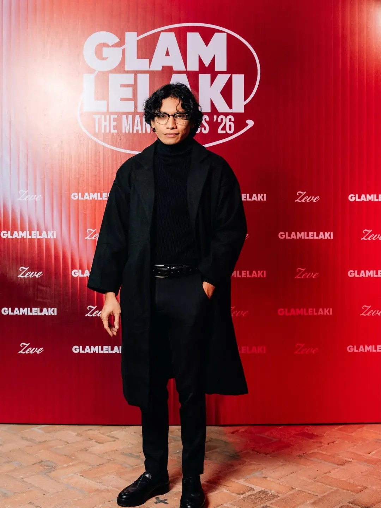
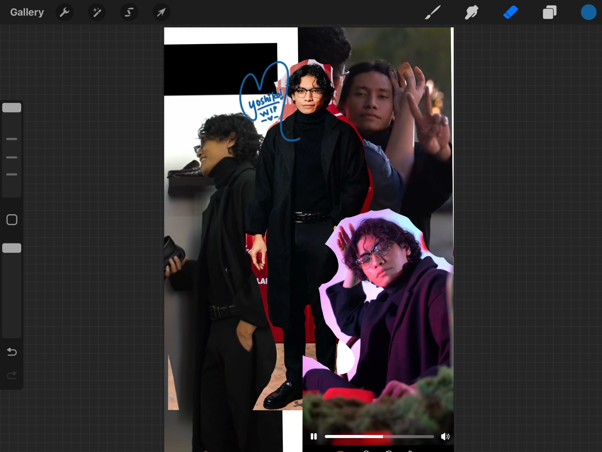
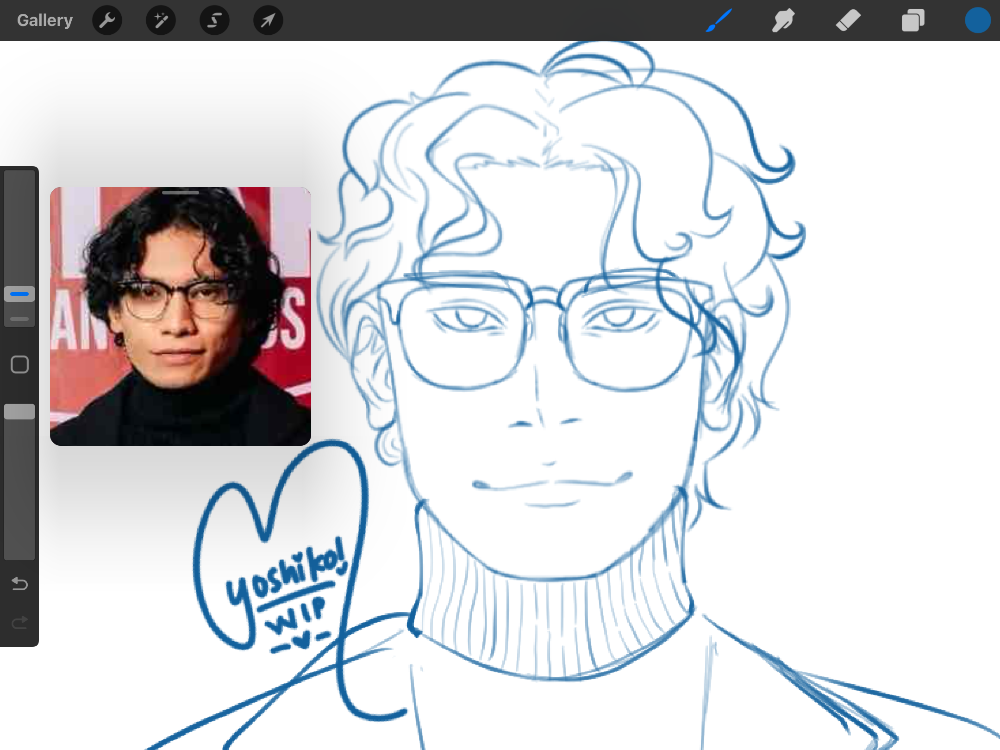
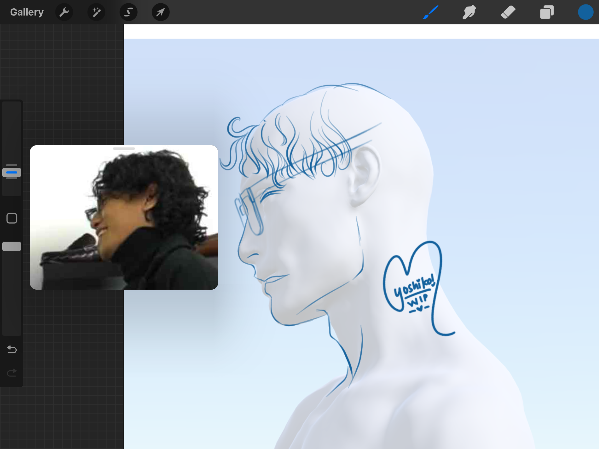

The idea to draw him in my style is all starts from one event he attended: GLAM LELAKI THE MAN AWARDS '26. I love his outfit that night and it giving me an idea and muse for my art.

Dai Fuad in GLAM LELAKI THE MAN AWARDS '26
I was gathering(and also screenshot) one of his video for some ideas and how I will draw him in my Procreate canvas.
So I came up with 4 pictures of him! (*ᴗ͈ˬᴗ͈)ꕤ*.ﾟ

Right now, I done line out the drawing. But, once I done outline all of it, I will refine and tidy them up before I start do colouring and shading.
Progress might a little slow since I put my assignments and projects from my course as my priority and I'll come back with this. (੭ ;´ ⌂ `;)੭

Currently progressing...
I'll get back with this once all my assignments are finish. Probably, I'll continuing this project during my semester break! Hihi!